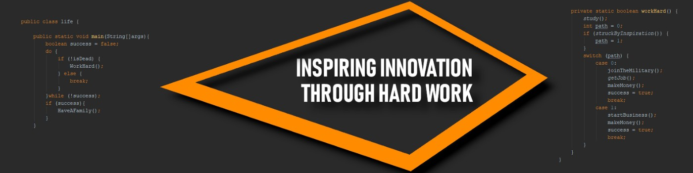

Jesse Breslin's Portfolio
About Me
I am a solution-seeking, creative, perfection-driven, determined, intermediate programmer, and graphics artist who is open-minded to learning new skills and experiencing enriching opportunities far outside my comfort zone. In my current role at Pacific Railway Enterprises©, I am a full-stack developer which means I handle and maintain the company's front-end and back-end development which consists of UI all the way down to the database. In my previous role at California Baptist University, my fellow student workers and I provided the students and staff at California Baptist University with quality Entertainment which was occasionally live-streamed by Fox sports. As an opportunist and eager student, I am seeking to further my current understanding of the computer science/software engineering fields through any ethical internship opportunity presented to me.
Featured Projects
College Projects Below are a list of projects that I worked on during my time at California Baptist University. Due to an unforeseen circumstance that occurred during the first semester of my Senior year, I lost almost all of the projects that I have worked on hence this list is very limited.
Project Highlights

{kind=link}
{kind=link}
{kind=link}
{kind=link}
{kind=link}
{kind=link}
{kind=link}
{kind=link}
Get in touch
Design: HTML5 UP.